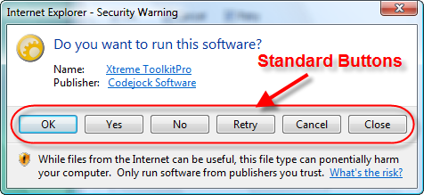
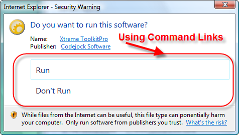

CommonButtons Property
| Xtreme Suite Controls ActiveX Control v15.3 |
Specifies the "commmon" push buttons displayed in the task dialog. If no common buttons are specified and no custom buttons are specified using the AddButton method, the task dialog will contain the "OK" button by default.
Read-write property
Public Property CommonButtons() As TaskDialogCommonButtonsAny combination of flags from the TaskDialogCommonButtons enumeration can be used to add common buttons to the task dialog. If the Cancel button is specified, the task dialog will respond to typical cancel actions (Alt-F4 and Escape).
The illustratrion below shows a dialog that has all common buttons added:

You can mix both user defined buttons, radio buttons, common buttons and command links. AddButton adds a user defined button to the task dialog's command area. AddRadioButton adds a user defined radio button to the task dialog's command area.
EnableCommandLinks specifies whether the buttons specified with AddButton should be displayed as command links (using a standard task dialog glyph) instead of push buttons. When using command links, all characters up to the first new line character in AddButton's Text argument will be treated as the command link's main text, and the remainder will be treated as the command link's note text.
The illustration below shows command links without icons:

[Adding Common Buttons (Visual Basic)] This sample illustrates how to add the Yes and OK common buttons.
taskDialog.CommonButtons = 0 |
TaskDialog Control | AddButton Method | EnableCommandLinks Property | DefaultButton Property | ButtonClicked Event | ClickButton Method | EnableButton Method | TaskDialogCommonButtons Enumeration | AddRadioButton Method